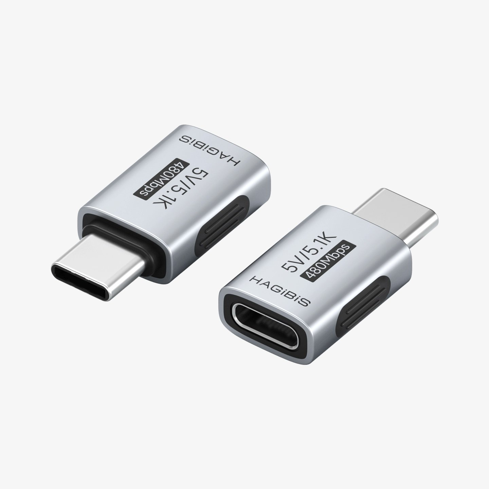

たたなこ
@tatanakots
@landiantech 但是其实自己去打板做一个5.1k转换器的成本或许更低，嘉立创免费打样的pcb+几块钱的0603贴片电阻+几块钱的type-c公头和母头，然后再用热缩管包上就好了

蓝点网
@landiantech
海备思这个C to C转接头内置5.1K下拉电阻，专门把电压限制到5V来适应各种小家电，比如键盘、手持小风扇、迷你小闹钟之类的。
这些小家电用大功率充电器反而没法正常充电，所以我之前买了好几个苹果5V1A的回收充电头专门用来给小家电充电。
海备思这个卖16，苹果5V1A的二手8块（需要A to https://t.co/MgaqmKvqS7